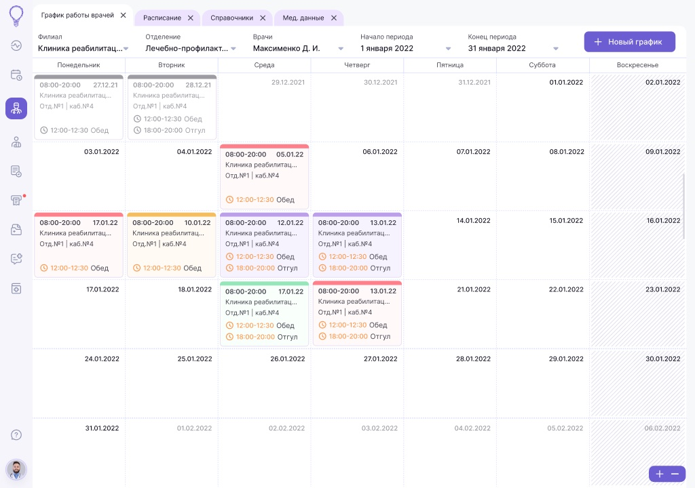
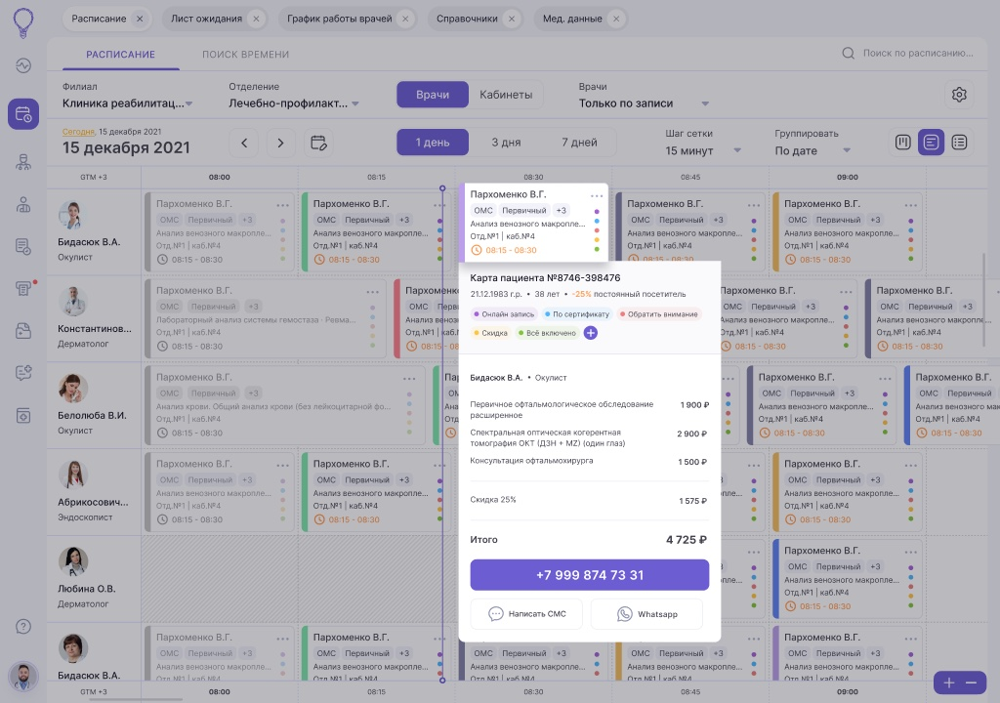
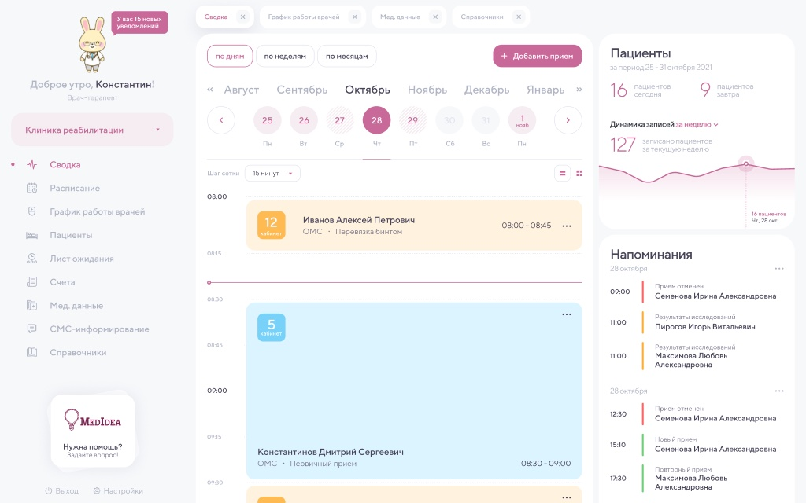
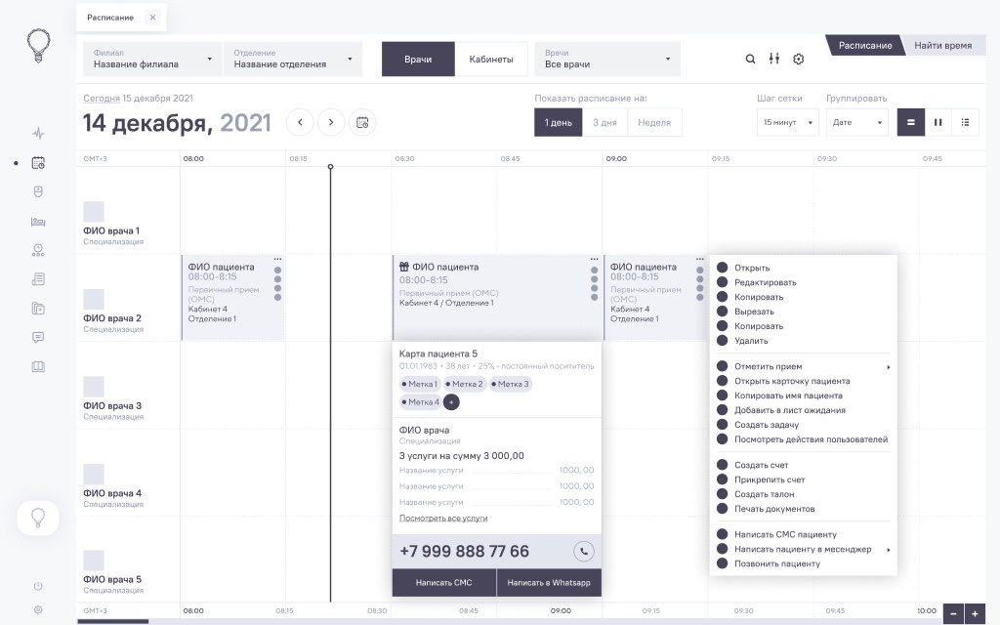
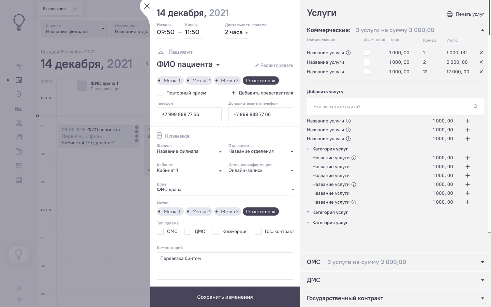
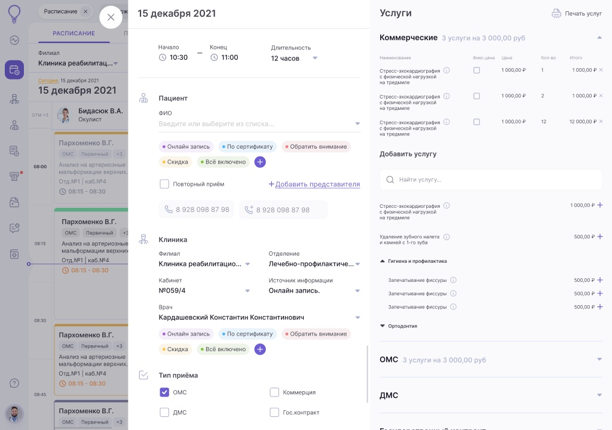
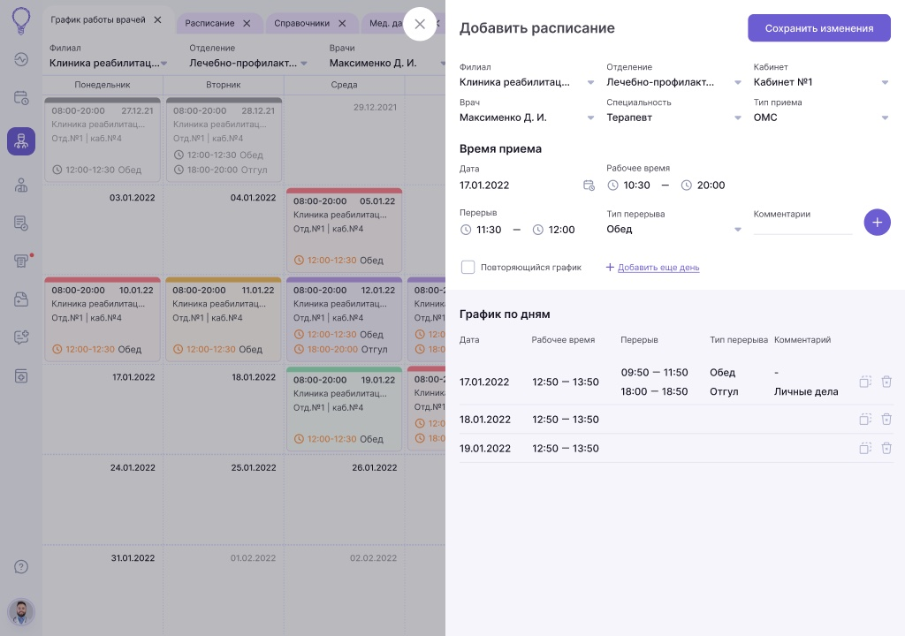

Медидея
Редизайн медицинской информационной системы для частных клиник: расписание, карта пациента, работа с ОМС и ДМС, счета, рассылки и аналитика.



Задача:
Медидея — МИС для частных клиник с возможностью работы в системе ОМС, учётом медикаментов, электронной историей болезни и финансовой аналитикой. В 2021 году клиент обратился за редизайном работающей системы.
Причины редизайна:
- Интервью с пользователями системы выявили ряд проблем юзабилити;
- Нужно было выделиться среди конкурентов более свежим дизайном.
Роль:
Арт-директор. Концепция, прототипы, дизайн интерфейса и UI-кит.
Этап #1
Концепция для пресейла: крупные понятные элементы и тёплая стилистика

Клиент просил сделать упор на понятные крупные элементы и стилистику в тёплых цветах. Концепт собран на примере рабочего места врача: сводка дня, расписание, динамика записей, напоминания.
Концепция была принята клиентом, и началась работа над реальным интерфейсом.
Этап #2
Прототипы: сначала логика, потом визуал
Каждый раздел сначала проходил через серые прототипы: сетка расписания, поиск времени, график работы врачей, карточка пациента. Рабочие макеты делались под ширину 1280 px. В прототипах фиксировались бизнес-правила и открытые вопросы:
- При добавлении полиса ОМС система сама отправляет запрос в ТФОМС и подставляет номер полиса и страховую. Любой ответ показывается пользователю, включая ошибку.
- Плательщик редко отличается от пациента и представителя, поэтому поле скрыто по умолчанию и открывается кнопкой «Указать плательщика».
- Если пациент отказался от уведомлений, кнопки «Написать» и «Позвонить» недоступны.


Этап #3
Сетка расписания: шесть итераций главного экрана системы
Расписание — основной рабочий экран администратора клиники. Сетка прошла версии от v.0 до v.5, прежде чем ушла в дизайн. Что получилось в итоге:
- Три представления: вертикальная сетка, горизонтальная сетка и расписание в строку. Каждое — на 1, 3 и 7 дней.
- Группировка по статусу: неделя раскладывается в колонки от «Новая запись» до «Клиент ушёл».
- Карточка записи показывает тип приёма, услугу, кабинет и время. Статус закодирован цветом верхней границы, метки пациента — цветными точками.
- Нерабочее время заштриховано, линия текущего времени проходит через всю сетку.
- Администратор видит поток пациентов по статусам, не открывая записи.
- Предпросмотр записи показывает карту пациента, услуги с суммой и скидкой, телефон, кнопки СМС и WhatsApp.
Этап #4
Запись на приём и график врачей: боковая панель поверх расписания

Редактирование приёма открывается боковой панелью, расписание остаётся на экране. Слева пациент, клиника и тип приёма, справа услуги, сгруппированные по источнику оплаты: коммерческие, ОМС, ДМС, госконтракт.
График работы врачей — месячный календарь со сменами и перерывами. Новый график добавляется в такой же панели: по дням или повторяющийся.
- Запись, услуги и оплата собраны в одном месте.
- Один паттерн панели для приёма и для графика врача.

Этап #5
Пять цветовых схем и UI-кит для дальнейшего развития системы
Перед редизайном было проработано пять вариантов цветовой схемы на одном и том же экране расписания. После того как клиент определился с фирменным цветом, началась работа над остальными разделами.
Параллельно собирался UI-кит, из которого построены все экраны системы.
- Шрифт Inter, 15 текстовых стилей с описанием применения.
- 35 наборов компонентов с вариантами и около 50 одиночных.
- Карточки записей в семи статусах для каждого вида сетки.
- Компонент онбординга с подсказками для новых пользователей.